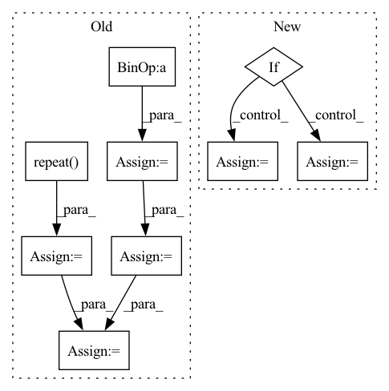

Pattern ID :2823
Before Change
gamma = CalculateGamma(input, block_size=self.block_size, keep_prob=self.keep_prob)
input_shape = input.shape
p = gamma.repeat( input_shape)
input_shape_tmp = input.shape
random_matrix = torch.rand(input_shape_tmp, device=input.device)
one_zero_m = (random_matrix < p).float()
mask_flag = torch.nn.functional.max_pool2d(one_zero_m, (self.block_size, self.block_size), stride=1, padding=1)
mask = 1.0 - mask_flag
elem_numel = input_shape[0] * input_shape[1] * input_shape[2] * input_shape[3]
elem_numel_m = float(elem_numel)
elem_sum = mask.sum()
output = input * mask * elem_numel_m / elem_sum
return output
After Change
return x
else:
gamma = (1. - self.keep_prob) / (self.block_size**2)
if self.data_format == "NCHW":
shape = x.shape[2:]
else:
shape = x.shape[1:3]
for s in shape:
gamma *= s / (s - self.block_size + 1)
In pattern: SUPERPATTERN
Frequency: 3
Non-data size: 9
Instances Fragment ID: 11260587
Project Name: miemie2013/miemiedetection
Commit Name: aabe1f2d364493c30179de6cf7d5c2d0c6ee7258
Time: 2021-12-30
Author: 53960695+miemie2013@users.noreply.github.com
File Name: mmdet/models/custom_layers.py
M Class Name: DropBlock
N Class Name: DropBlock
M Method Name: forward(2)
N Method Name: forward(2)
M Parent Class: torch.nn.Module
N Parent Class: torch.nn.Module
M File Name: mmdet/models/custom_layers.py
N File Name: mmdet/models/custom_layers.py
M Start Line: 538
M End Line: 576
N Start Line: 724
N End Line: 745
Before Change
b = input.shape[0]
h = input.shape[2]
w = input.shape[3]
x_range = T.arange(0, w, dtype=T.float32, device=input.device) / (w - 1) * 2.0 - 1
y_range = T.arange(0, h, dtype=T.float32, device=input.device) / (h - 1) * 2.0 - 1
x_range = x_range[np.newaxis, np.newaxis, np.newaxis, :].repeat((b, 1, h, 1))
y_range = y_range[np.newaxis, np.newaxis, :, np.newaxis].repeat( (b, 1, 1, w))
offset = T.cat([input, x_range, y_range], dim=1)
return offset
After Change
def forward(self, x):
gx, gy = add_coord(x, self.data_format)
if self.data_format == "NCHW":
y = torch.cat([x, gx, gy], 1)
else:
y = torch.cat([x, gx, gy], -1)
y = self.conv(y)
return y
Fragment ID: 11260074
Project Name: miemie2013/miemiedetection
Commit Name: aabe1f2d364493c30179de6cf7d5c2d0c6ee7258
Time: 2021-12-30
Author: 53960695+miemie2013@users.noreply.github.com
File Name: mmdet/models/custom_layers.py
M Class Name: CoordConv
N Class Name: CoordConv
M Method Name: forward(2)
N Method Name: forward(2)
M Parent Class: torch.nn.Module
N Parent Class: torch.nn.Module
M File Name: mmdet/models/custom_layers.py
N File Name: mmdet/models/custom_layers.py
M Start Line: 498
M End Line: 508
N Start Line: 574
N End Line: 580
Before Change
if sinusoidal_pos is not None:
cos_pos = tf.repeat(sinusoidal_pos[..., 1::2], 2, axis=-1)
sin_pos = tf.repeat( sinusoidal_pos[..., ::2], 2, axis=-1)
qw2 = tf.stack([-query_layer[..., 1::2] , query_layer[..., ::2]],
axis=-1)
qw2 = tf.reshape(qw2, shape_list(query_layer))
query_layer = query_layer * cos_pos + qw2 * sin_pos
kw2 = tf.stack([-key_layer[..., 1::2], key_layer[..., ::2]],
axis=-1)
kw2 = tf.reshape(kw2, shape_list(key_layer))After Change
value_layer = self.transpose_for_scores(mixed_value_layer, batch_size)
if sinusoidal_pos is not None:
if self.rotary_value:
query_layer, key_layer, value_layer = self.apply_rotary_position_embeddings(
sinusoidal_pos, query_layer, key_layer, value_layer
)
else:
query_layer, key_layer = self.apply_rotary_position_embeddings(
sinusoidal_pos, query_layer, key_layer)
// Take the dot product between "query" and "key" to get the raw attention scores. Fragment ID: 11260584
Project Name: junnyu/roformer_pytorch
Commit Name: 0cb5500e1ca9c8634d63a5231883b1a99ef0f7f8
Time: 2021-05-17
Author: 573009727@qq.com
File Name: src/roformer/modeling_tf_roformer.py
M Class Name: TFRoFormerSelfAttention
N Class Name: TFRoFormerSelfAttention
M Method Name: call(7)
N Method Name: call(7)
M Parent Class: tf.keras.layers.Layer
N Parent Class: tf.keras.layers.Layer
M File Name: src/roformer/modeling_tf_roformer.py
N File Name: src/roformer/modeling_tf_roformer.py
M Start Line: 229
M End Line: 252
N Start Line: 240
N End Line: 264